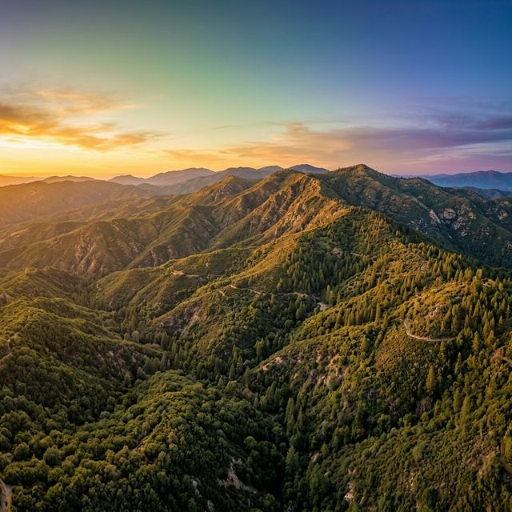

Julian, California · Est. 1988
Over 31,000 acres of wild land conserved in the heart of San Diego County — through science, stewardship, and community.
Explore VMF
Follow the mountain's story — from ancient oak groves to future generations
Our history since 1988, mission & vision, board of directors, and the story of Volcan Mountain itself.
Explore →Conservation, habitat restoration, education programs, wildlife monitoring, art, and citizen science.
Explore →Upcoming events, hiking trails, volunteering, membership, the VMF shop, and sustaining friends program.
Explore →Support land acquisition, habitat restoration, and education programs. Every dollar protects the mountain.
Give Now →Don't Miss It
VMF's signature fundraising gala returns on April 11, 2026. An evening of live auction, dinner, and dancing — all in support of Volcan Mountain conservation.
Live auction items from local artists and outdoor brands
Three-course dinner in the Julian backcountry
Dancing under the stars with VMF supporters
2026 Online Auction — bid from anywhere